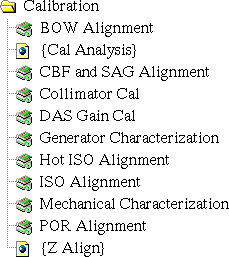

Proprietary to General Electric
Direction 5114043-800, Rev# 9
LightSpeed 3.X Service Methods (Advanced)
Proprietary to General Electric |
Illustration 1: Calibration Applications Icon
Illustration 2: Calibration Applications Menu (Advanced)

Use the calibration menu to access the following tools and diagnostics:
The Beam-On-Window alignment tool allows you to position the x-ray tube, perform the scans, and calculate the amount of movement necessary to align the detector to the x-ray tube beam play.
Enables you to view and analyze calibration vectors from the calibration database. This tool is not currently available. Use Scan Analysis to plot cal vectors.
Calls up the CBF & SAG alignment tool that allows you to perform the necessary scans of air and a pin-in-space so that it can calculate any adjustments needed to position the bowtie filter in the center of the fan beam.
Calls up scanner utilities (left head) to perform collimator calibration and update the calibration database.
Calls up DAS Tools to allow you to calibrate converter cards that have the z-tracking channels.
Calls up the generator characterization tool to allow you to perform the characterization steps required when replacing an X-ray tube.
Calls up the Hot ISO Alignment tool, allowing you to perform the scans and calculate the necessary tube movements in order to align the isocenter of the tube’s fan beam to the isocenter of the gantry’s plane-of-rotation (X-Axis).
Calls up the ISO Alignment tool (Cold ISO), allowing you to perform the scans and calculate the necessary tube movements, in order to align the isocenter of the tube’s fan beam to the isocenter of the gantry’s plane-of-rotation (X-Axis).
Calls up the mechanical characterization tool to allow you to characterize the tilt, table elevation, and cradle position.
Calls up the Plane-of-Rotation alignment tool, and allows you to perform scans of a piece of film attached to a phantom. The program then allows you to input measurements taken from the exposed, developed film, and calculates necessary tube movements that will align the x-ray tube’s fan beam to the gantry’s plane-of-rotation.
Not supported at this time.